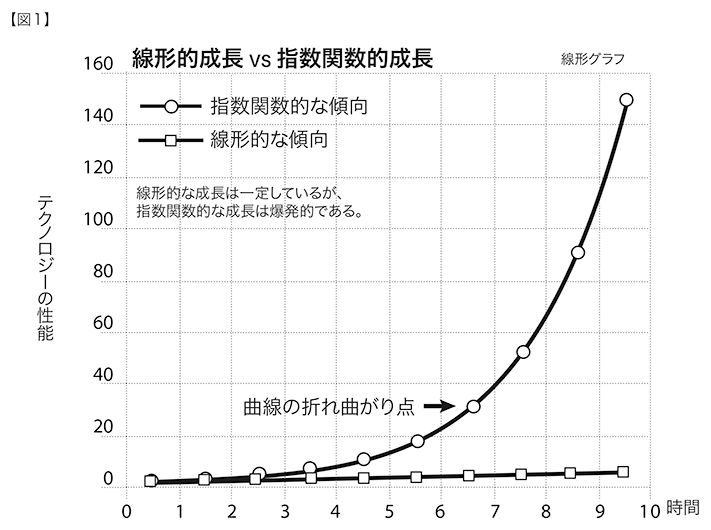
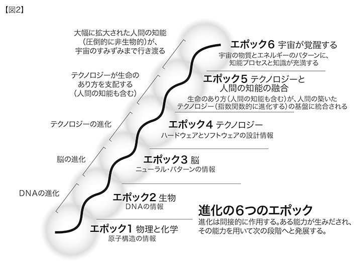
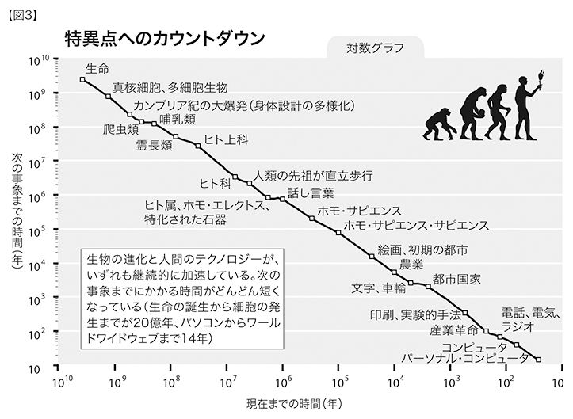
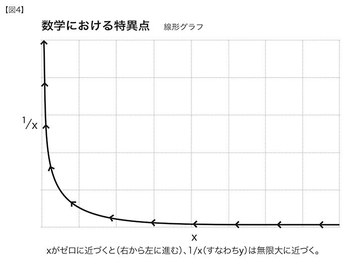

誰しも、自分の想像力の限界が、世界の限界だと誤解する。
──アルトゥル・ショーペンハウアー
特異点というものに気づいたのがいつごろのことだったのかは、よくわからない。たぶん、徐々に認識を深めていったのだろう。半世紀近くも、コンピュータをはじめとするテクノロジーにどっぷりと浸かってきて、さまざまなレベルで次々に大変動が起こるのを目の当たりにし、それらがどのような意味や目的をもっているのかを理解しようと努めてきた。二一世紀の前半にどのような革新的な出来事が待ちかまえているのかが、少しずつ見えてくるようになった。宇宙のブラックホールが、事象の地平線〔ブラックホールにおいて、それ以上内側に入ると光すらも脱出できなくなるとされる境界〕に近づくにつれ、物質やエネルギーのパターンを劇的に変化させるのと同じように、われわれの目の前に迫りくる特異点は、人間の生活のあらゆる習慣や側面をがらりと変化させてしまうのである。性についても、精神についても。
特異点とはなにか。テクノロジーが急速に変化し、それにより甚大な影響がもたらされ、人間の生活が後戻りできないほどに変容してしまうような、来るべき未来のことだ。それは理想郷でも地獄でもないが、ビジネス・モデルや、死をも含めた人間のライフサイクルといった、人生の意味を考えるうえでよりどころとしている概念が、このとき、すっかり変容してしまうのである。特異点について学べば、過去の重大な出来事や、そこから派生する未来についての見方が変わる。特異点を正しく理解できれば、人生一般や、自分自身の個別の人生の捉え方がおのずと変わるのだ。特異点を理解して、自分自身の人生になにがもたらされるのかを考え抜いた人のことを、「特異点論者」と呼ぼう001。
収穫加速の法則（人間進化の生物的な革新に続いてテクノロジーの革新が起こるが、進化の速度は本質的に加速していくこと）とわたしが命名したものは、意味するところは明白であるはずなのに、まだ受け入れてもらえていない。これは、いたしかたない。わたし自身だって、眼前の理にかなった事実をのみこむまでには四〇年もかかったのだし、その結果もたらされることを諸手をあげて歓迎しているとはまだ言えないからだ。
迫りくる特異点という概念の根本には、次のような基本的な考え方がある。人間が生みだしたテクノロジーの変化の速度は加速していて、その威力は、指数関数的な速度で拡大している、というものだ。指数関数的な成長というものは、つい見過ごしてしまいがちなものである。最初は目に見えないほどなのに、そのうち予期しなかったほど激しく、爆発的に成長する。変化の軌跡を注意深く見守っていないと、まったく思いもよらない結果になる（図１「線形的成長vs指数関数的成長」参照）。

こういう話がある。湖の所有者が、睡蓮の葉で湖面が覆われ、湖の魚が死んでしまうことのないよう、家を寸刻も空けずに湖を観察することにした。睡蓮の葉は、数日ごとに二倍に増えるという。何か月もの間、所有者はひたすら様子をうかがったが、睡蓮の葉は、ほんのわずかしか見られず、とりたてて広がっていくようには思われなかった。睡蓮の葉が占める面積は湖全体の一パーセントにも満たないようなので、ここらで休みを取って、家族で出かけてもだいじょうぶだろうと判断した。数週間後に帰宅した所有者は、びっくりした。湖全体が睡蓮の葉で覆われ、魚がみんな死んでしまっていたのだ。数日ごとに二倍になるので、最後に七回倍加した分で、睡蓮の葉が湖全体に広がっていたのだ（七回倍加すると、睡蓮の葉の占める面積は一二八倍になる）。指数関数的な成長には、こうした特質がある。
チェスの世界チャンピオン、ガルリ・カスパロフの例もある。カスパロフは一九九二年に、コンピュータにチェスで負けるはずはない、と一笑に付した。ところが、コンピュータの性能は毎年二倍になっていき、わずか五年後にカスパロフを打ち負かした002。コンピュータが人間の能力をしのぐ分野は、今や急速に増えている。そのうえ、コンピュータの知能が使える仕事はかつては限られていたが、今ではその種類が徐々に広がってきている。たとえば、心電図や医学画像を見て診断を下したり、飛行機を飛ばして着陸させたり、自動制御兵器を使うかどうかを戦略的に判断したり、信用取引や財政上の問題を検討したり、その他もろもろの、過去には人間の知能に頼っていた課題をこなす責任を、今やコンピュータが負っている。こうしたコンピュータ・システムのパフォーマンスの基盤として、多種多様な人工知能（ＡＩ）を統合したものが、ますます利用されるようになってきた。しかし、活用されている分野のどこかでＡＩの欠点が露わになったりしたら、ＡＩを快く思わない人々は、そうした領域は、いつまでたってもコンピュータの能力が人間の能力を上回ることのない、人間に生まれながらにして備わった最後の砦なのだ、と主張するだろう。
だが本書では、これから数十年のうちに、情報テクノロジーが、人間の知識や技量を全て包含し、ついには、人間の脳に備わった、パターン認識力や、問題解決能力や、感情や道徳に関わる知能すらも取り込むようになると論じていくことになるだろう。
人間の脳は、さまざまな点でじつにすばらしいものだが、いかんともしがたい限界を抱えている。人は、脳の超並列処理（一〇〇兆ものニューロン間結合〔シナプスでの結合〕が同時に作動する）を用いて、微妙なパターンをすばやく認識する。だが、人間の思考速度はひじょうに遅い。基本的なニューロン処理は、現在の電子回路よりも、数百万倍も遅い。このため、人間の知識ベースが指数関数的に成長していく一方で、新しい情報を処理するための生理学的な帯域幅はひじょうに限られたままなのである。
われわれの現在備えているバージョン1.0の生物的身体も、同じようにもろく、無数の故障モードに陥ってしまう。身体を維持するのに、厄介な儀式が必要なのは言うまでもない。人間の知能は、ときには高い創造力や表現力を発揮できることもあるが、その思考するところのほとんどは、たんなる模倣にすぎなかったり、たいして重要でなかったり、制約があったりする。
特異点に到達すれば、われわれの生物的な身体と脳が抱える限界を超えることが可能になり、運命を超えた力を手にすることになる。死という宿命も思うままにでき、好きなだけ長く生きることができるだろう（永遠に生きるというのとは、微妙に意味合いが違う）。人間の思考の仕組みを完璧に理解し、思考の及ぶ範囲を大幅に拡大することもできる。二一世紀末までには、人間の知能のうちの非生物的な部分は、テクノロジーの支援を受けない知能よりも、数兆倍の数兆倍も強力になるのだ。
われわれは今、こうした移行期の初期の段階にある。パラダイム・シフト率（根本的な技術的アプローチが新しいものへと置き換わる率）と、情報テクノロジーの性能の指数関数的な成長はいずれも、「曲線の折れ曲がり」地点に達しようとしている。この地点にくると、指数関数的な動きが目立つようになり、この段階を過ぎるとすぐに、指数関数的な傾向は一気に爆発する。今世紀の半ばまでには、テクノロジーの成長率は急速に上昇し、ほとんど垂直の線に達するまでになるだろう──そのころ、テクノロジーとわれわれは一体化しているはずだ。厳密に数学的な見方をすれば、成長率は有限でありながらも極端に高いために、テクノロジーの進展とともに、人間の歴史の構造が崩壊してしまうことになる。そうした印象は、いずれにしても、テクノロジーにより強化されていない古典的で生物学的な人間の見方にすぎないのだが。
特異点とは、われわれの生物としての思考と存在が、みずからの作りだしたテクノロジーと融合する臨界点であり、その世界は、依然として人間的ではあっても生物としての基盤を超越している。特異点以後の世界では、人間と機械、物理的な現実とヴァーチャル・リアリティとの間には、区別が存在しない。そんな世界で、確かに人間的だと言えるものが残っているのかと問われれば、あるひとつの性質は変わらずにあり続ける、と答えよう。それは、人間という種は、生まれながらにして、物理的および精神的な力が及ぶ範囲を、その時々の限界を超えて広げようとするものだ、という性質だ。
こうした変化にたいして、否定的な意見を述べる人たちがいる。特異点以後の世界に移行すると、人間性のなくてはならない面が失われてしまう、というのだ。だが、テクノロジーがどのように発展していくかが誤解されているから、こうした意見が出てくるのだ。これまでに存在した機械は、人間特有の生物的な性質に必須な繊細さが欠けていた。特異点にはさまざまな特徴があるが、それが指し示すもっとも重要な点は、テクノロジーが、人間性の粋とされる精巧さと柔軟さに追いつき、そのうち大幅に抜き去る、というものだ。
超人的な知能の一号機が作られ、今度はみずからを対象にそれを改良し始めたら、根本的な不連続的発展が起こるだろう。それがどのようなものか、わたしにはそもそも予測すらできないのだが。
──ミハエル・アニシモフ
一九五〇年代、伝説的な情報理論研究者のジョン・フォン・ノイマンがこう言ったとされている。「たえず加速度的な進歩をとげているテクノロジーは……人類の歴史において、ある非常に重大な特異点に到達しつつあるように思われる。この点を超えると、今日ある人間の営為は存続することができなくなるだろう003」ノイマンはここで、加速度と特異点という二つの重要な概念に触れている。加速度の意味するところは、人類の進歩は指数関数的なものであり（定数を掛けることで繰り返し拡大する）、線形的（定数を足すことにより繰り返し拡大する）なものではない、ということだ。
さらに、特異点の意味するところは、指数関数的な成長は魅力的で、最初の動きはゆっくりでほとんど目立ったところはないが、曲線の折れ曲がり地点を過ぎると、爆発的に増大しグラフの形が一変する、ということだ。未来は、まったく誤解されている。われわれの祖先は、未来は現在によく似たものだろうと考えた。その現在は、過去とよく似ていた。指数関数的な動きは一〇〇〇年前にも存在していたが、まだまだ初期の段階だったので、成長が平坦で遅く、なんの動きも認められないように思われた。その結果、未来もたいして変わらないという予測は当たった。今の時代なら、テクノロジーが進歩を続け、社会もそれに影響を受ける、というような未来を予測する。ところが、未来は、たいていの人が思い描くより、はるかに驚くべきものになるだろう。変化の率そのものも加速度的に大きくなっているという事実がもつ意味を、きちんと考慮に入れている人がほとんどいないからだ。
未来では技術的になにが実現可能かという長期予想がいくつも立てられているが、その多くは、未来にはものごとがどれほどの勢いで進展するかを過小評価している。そうなるのは、我流の用語で言うと、「歴史的指数関数的」展望ではなく、「直感的線形的」展望に基づいた予想をしているからだ。次章で説くことになるが、わたしのモデルを見れば、パラダイム・シフトが起こる率が一〇年ごとに二倍になっていることがわかる。こうして、二〇世紀の間、進歩率が徐々に高まり、今日の率にまでなるに至った。二〇世紀の一〇〇年間に達成されたことは、西暦二〇〇〇年の進歩率に換算すると二〇年間で達成されたことに相当する。この先、この西暦二〇〇〇年の進歩率による二〇年分の進歩をたったの一四年でなしとげ（二〇一四年までに）、その次の二〇年分の進歩をほんの七年でやってのけることになる。別の言い方をすれば、二一世紀では、一〇〇年分のテクノロジーの進歩を経験するのではなく、およそ二万年分の進歩をとげるのだ（これも今日の進歩率で計算する）。もしくは、二〇世紀で達成された分の一〇〇〇倍の発展をとげるとも言える004。
未来像は、それぞれの領域で、しばしば誤って予測されている。数ある誤解の中から、ひとつ例をあげてみよう。分子工学の可能性を探る討論会に最近出席をしたところ、ノーベル賞受賞者のパネリストが、ナノテクノロジーの安全性に不安がもたれているようだが、「ナノエンジニアリングで作られた実体［分子の断片で構成された装置］が自己複製をするなど、今後一〇〇年はありえない」からまったく問題はない、と語っていた。わたしはこう指摘した。一〇〇年というのは妥当なところだろう。実際に、その段階に到達するのに必要な技術的な進歩の量をわたしが見積もったところでも、同じところに落ち着いた。ただし、その見積もりは、今日の進歩率で計算したものだ（二〇世紀に経験した変化率を平均したものの五倍）。進歩の率は一〇年ごとに二倍になっているので、一〇〇年の進歩に相当するものは、たったの二五年で実現されるだろう──それも今日の率で計算した場合の話だ。
ＤＮＡの二重らせん構造の発見五〇周年を記念して、二〇〇三年に開かれた「タイム」誌主催の「生命の未来会議」でも、招待講演者たちが、これからの五〇年はどんな時代になるかと問われた005。どの講演者も、実質的に、過去五〇年間の進歩を振り返り、それを今後五〇年間のモデルに適用していた。たとえば、ＤＮＡの二重らせんの共同発見者、ジェームズ・ワトソンは、五〇年の間に、好きなだけ食べても体重が増えない薬が発明されるだろうと発言した。
わたしは「五〇年もかかるんですか」と聞き返した。こんなことなら、すでにマウスで実現されている。脂肪細胞における脂肪の蓄積を制御する脂肪インシュリン受容体遺伝子をブロックすればいいだけだ。人間に使われる薬（第五章で説明をするＲＮＡ干渉などの技術を用いる）が開発中で、数年のうちには米国食品医薬品局（ＦＤＡ）で試験されることになるだろう。こうした薬は、五年から一〇年で実用可能になる。五〇年なんてとんでもない。他の予測も同じく近視眼的で、現時点の研究における重要事項ばかりに注目し、今後の半世紀でもたらされるはずの大きな変化を見過ごしている。会議の出席者のうち、未来がもつ指数関数的な性質を考慮に入れていたのは、どうやらビル・ジョイ〔米国のコンピュータ科学者。サン・マイクロシステムズ社の創設者のひとり〕とわたしだけだった。ただし、ジョイとわたしでは、未来の変化がもつ意味については意見を異にしてはいたが。この点については、第八章で検討する。
人はたいてい、今の進歩率がそのまま未来まで続くと直感的に思い込む。長年生きてきて、変化のペースが時代とともに速くなることを身をもって経験している人でさえ、うっかりと直感に頼り、つい最近に経験した変化と同じ程度のペースでこれからも変化が続くと感じてしまう。なぜなら、数学的に考えると、指数関数曲線は、ほんの短い期間だけをとってみれば、まるで直線のように見えるからだ。そのため、識者でさえも、未来を予測するとなると、概して、現在の変化のペースをもとにして、次の一〇年や一〇〇年の見通しを立ててしまう。だからわたしは、こうした未来の見方を「直感的線形的」展望と名づけた。
しかし、テクノロジーの歴史を徹底して研究すれば、テクノロジーの変化は指数関数的なものだということが明らかになる。指数関数的な成長は、どのような進化のプロセスにも見られる特徴で、中でもテクノロジーにおいて顕著だ。さまざまな手法で、異なる時間の尺度を用いて、多様なテクノロジーのデータを検討してみるといい──電子技術から生物学に至るまで、はたまた、人間の知識量との関係や、経済規模との関係までも研究の対象に含めてみよう。どれをとっても、進歩と成長が加速度的になることがわかる。そのうえ、ただの指数関数的成長だけでなく、「二重の」指数関数的成長に気づくこともしばしばだ。「二重」というのは、指数関数的な成長率（つまりは指数）そのものも、指数関数的に成長しているという意味だ（たとえば、第二章における、コンピューティングのコストパフォーマンスについての議論を参照してほしい）。
科学者や技術者の多くは、わたしに言わせれば「科学者の悲観主義」に侵されている。たいてい、目の前にある問題の難しさや複雑な細部に気を取られすぎていて、自分の研究がもつ長期的意義を見失ったり、研究分野をより広い視野で捉えることを忘れてしまったりしがちだ。また、テクノロジーの次世代が誕生するごとに、はるかに強力なツールが利用可能になることも、考慮に入れ忘れてしまう。
科学者というものは、つねに懐疑的であり、取り組んでいる課題の目標について軽率に語るのを慎み、次代の科学研究についてめったに予測したりしないようにと教えこまれている。科学技術の一世代が人間の一世代よりも長かったころには、こうしたやり方が適切だったかもしれないが、科学技術がほんの数年で一世代分の進歩をとげる今のような時代となっては、これでは社会の要請に応えられない。
生化学者の例を見てみよう。一九九〇年当時、ヒトの全ゲノムをたったの一五年で解読するという目標は無理ではないかとみなが考えていた。一年間かかってようやく、ゲノムのわずか一万分の一を解読できたところだったからだ。だから、多少は技術が前進すると見込んでも、全ゲノムの配列を解読するには、少なくとも一〇〇年はかかると見積もったのも無理はない。
あるいはこちらの例はどうだろう。一九八〇年代半ば、インターネットはたいして重要な現象にはなるまい、とささやかれていた。その当時、ノード（サーバともいう）は数万しかなかったのだ。ところが実際には、ノード数は毎年二倍に増えていて、一〇年後には数千万に達しそうな勢いだった。しかし、一九八五年当時の最新技術を相手に苦労していた人たちには、この傾向が十分に理解できなかった。当時の技術では、一年間で世界中に、たったの数万のノードを追加することしかできなかったのだ006。
逆のケースの思い違いが起こることもある。指数関数的な現象を目に留め、どれくらいの率で成長するかを適切にモデル化せず、過度に大胆な予測を立てた場合などがそうだ。指数関数的な成長では、時間の経過とともに成長の速度が増すが、瞬時にそうなるわけではない。「インターネット・バブル」やそれに関連する情報通信バブル（一九九七－｜二〇〇〇年）による資本価値（すなわち株価）の急騰は、いくら指数関数的な成長といっても、あまりに無謀な期待が寄せられた結果起きたことだった。次章で具体的に説明するが、インターネットと電子商取引の普及においては、バブルからその崩壊までも含め、一貫してなめらかな指数関数的な成長が見られた。成長への期待が過度に高まっても、資産（株式）評価額が上がっただけに終わった。同様の間違いは、もっと以前のパラダイム・シフトについても見つけることができる。たとえば、鉄道の初期の時代（一八三〇年代）は、インターネット・ブームとその崩壊過程によく似ていて、ものすごい勢いで鉄道網が拡張された。
未来予測を立てるときには、もうひとつ別の種類の間違いを犯しやすい。今日のあるひとつの傾向から導かれる変化にだけ注目し、他のことがらはなにひとつとして変わらない、としてしまうことだ。その格好な例が、寿命が伸びすぎると、人口が過剰になり、限りある資源が枯渇して生活が成り立たなくなる、と懸念されていることだ。この場合は、ナノテクノロジーや「強いＡＩ」〔ＡＩには抽象的思考や自己意識を含め、人の脳がもつ心的機能が全て原理的に実現可能とする考え。本書では、さらに人間をはるかに超えるＡＩの意味でも使っている〕を用いて、その分に見合った大きな富を産出できることが忘れられている。たとえば、ナノテクノロジーを用いた製造装置なら、二〇二〇年代には、安価な原材料や情報から、ほぼありとあらゆる物理的な製品を作りだすことができるようになる。
ここまで執拗に指数関数的な展望と線形的な展望の違いを強調するのは、後者が未来の動向を予測するうえで起こるもっとも大きな間違いだからだ。テクノロジー予想では、テクノロジーの進歩を歴史的な指数関数的展望で見る、ということがまったくなされていない。実際に、わたしの知る人のほとんどは、未来を線形的に見ている。このせいで、短期的に達成できることは必要以上に高く見積もるのに（細部の必要条件を見落としてしまいがちだから）、長期的に達成されることを必要以上に低く見積もってしまう（指数関数的な成長に気づかないから）。
まず、われわれが道具を作り、次は道具がわれわれを作る。
──マーシャル・マクルーハン
未来は、これまでとは違う。
──ヨギ・ベラ〔元メジャー・リーガー〕
進化とは、増大する秩序のパターンを作りだすプロセスのことだ。秩序という概念については、次章で検討する。本節では、パターンという概念に注目したい。パターンが生まれ進化してきたからこそ、この世界の究極的な物語ができあがったのだと、わたしは考えている。進化は間接的に作用する。つまり、それぞれの段階、すなわちエポックでは、その前のエポックで作られた情報処理手法を用いて、次なるエポックを生みだす。生物およびテクノロジーの進化の歴史を、六つのエポックに分けて概念化した。あとでくわしく見ていくが、特異点はエポック５で始まり、エポック６において、地球から宇宙全体へと広がっていく。

エポック１ 物理と化学 われわれの起源を遡ると、情報が基本的な構造で表されている状態に行き着く。物質とエネルギーのパターンがそうだ。量子重力理論という最近の理論では、時空は、離散した量子、つまり本質的には情報の断片に分解されると言われている。物質とエネルギーの性質が究極的にはデジタルなのかアナログなのかという議論があるが、どう決着するにせよ、原子の構造には離散した情報が保存され表現されていることは確実にわかっている。
ビッグ・バンから数十万年後、陽子と中性子からなる核のまわりの軌道に電子が捕らえられ、原子が形成され始めた。原子は電気的な構造をしているために「ねばねば」している。数百万年後、原子が集まって、分子と呼ばれる比較的安定した構造を作るようになり、化学的過程が始まった。全ての元素の中でも、もっとも用途が広いのが炭素であることがわかった。炭素は、四方向で結合することができ（他の元素ではたいてい、一から三方向まで）、複雑で情報量の豊かな三次元構造を作る。
現状の宇宙の法則や、基本的な力の相互作用を司る物理定数の均衡が、情報の体系化と進化にとって、絶妙かつ精緻なまでに最適なものであるのを見れば（その結果、情報がさらに複雑になっている）、どうして、かくも稀有な状況が生まれたのだろう、と疑問に思わざるをえない。神の手によるものだと考える人もいるし、人間自身の手によるものだと考える人もいる──人間が進化することのできたこの宇宙においてのみ、人間が存在してこうした疑問をもつことができる、とする「人間原理」の立場がそうだ007。多重宇宙についての最近の物理理論では、新たな宇宙が次々と生成され、それぞれの宇宙には独自の法則があるものの、そのほとんどはすぐに消えてなくなるか、さらなる複雑な進化を促すような法則をもたないため、存続はしても興味をひくほどのパターン（地球での生命系が作りだしたようなもの）へと進化することがない、と推測されている008。宇宙の黎明期を説明づけるこれらの進化論をどうすれば検証できるのかは皆目見当がつかないが、この宇宙の物理法則が、ますます秩序を増し複雑になっていくような進化を可能にするために、あるべきものになっていることは確かだ009。
エポック２ 生命とＤＮＡ 数十億年前、第二のエポックが始まった。炭素ベースの化合物はますます複雑化し、分子の複雑な集合体が、自己複製機構を形成するまでになり、生命が誕生した。ついには、生物組織が、さらに大きな分子の集合について記述する情報を保存するための、正確なデジタルの仕組み（ＤＮＡ）を進化させた。この分子と、コドン〔伝令ＲＮＡ内の三つの塩基の連なり。特定のアミノ酸を指定する暗号単位〕とリボソーム〔タンパク質の合成器官〕という補助的な装置の働きで、このエポック２における進化の実験にまつわる記録が保存されることとなった。
エポック３ 脳 それぞれのエポックでは、パラダイム・シフトによって情報を進化させ、さらに高い「間接的」な進化の水準へと到達する（つまり、ひとつのエポックで得た成果を用いて、次のエポックを生みだす進化）。たとえば、エポック３では、ＤＮＡ主導の進化によって、自身の感覚器官を使って情報を検知し、自身の脳と神経系に情報を蓄えることのできる有機体が作りだされた。これが可能になったのは、エポック２の機構（ＤＮＡと、タンパク質とリボ核酸（ＲＮＡ）の断片からなる遺伝子発現を制御する後成的〔ＤＮＡによりあらかじめ決定されているわけではなく、発生過程で形成される〕な情報）が、エポック３の情報処理機構（有機体の脳と神経系）を（間接的に）実現させて規定したからだ。エポック３では、まず、初期の動物がパターンを認識できる能力をもつようになった。これは、人間の脳の活動のかなりの部分を今でも説明づける力だ。最終的には、われわれ人類が、経験した世界を頭の中で抽象的にモデル化し、そうしたモデルがなにを意味しているのかを理性的に考える能力を進化させた。人間には、世界を自分の頭の中で再設計し、そこで得られた考えを行動に移す、という力があるのだ。
エポック４ テクノロジー 理性的で抽象的な思考という授かり物と、他の指と向かい合わせになった親指とを組み合わせ、人類は、第四のエポックに分け入り、間接的な進化の次の水準に到達した。すなわち、テクノロジーが人間の手で作られた。まずは、単純な機械に始まり、精密な自動装置へと発展した。ついには、複雑な計算通信装置ができ、テクノロジー自体が、情報の精巧なパターンを感知し、保存、評価することができるようになった。生物の知能進化率と、テクノロジーの進化率を比較すると、もっとも進んだ哺乳類では、一〇万年ごとに脳の容量を約一六ミリリットル（一立方インチ）増やしてきたのにたいし、コンピュータの計算能力は、今現在、毎年おおよそ二倍になっている（第二章を参照）。もちろん、脳の大きさやコンピュータの計算能力だけで知能を比較することはできないが、これらは確かに進化を可能にする要因ではある。
生物の進化と人間の手によるテクノロジーの発展の両方における主要な出来事を、ひとつのグラフに同時に示してみよう（図３）。ｘ軸（何年前かを示す）とｙ軸（パラダイム・シフトにかかる時間）を、いずれも対数目盛りで表す。すると、かなり直線に近いもの（継続的な加速度）が得られ、生物の進化が、そのまま人間が主導するテクノロジーの発展につながっていることがわかる。

この図には、生物とテクノロジーの歴史の中でわたしが重要だと考える出来事を入れた。ただし、グラフが直線になり、進化の加速度が継続していることが表されているのは、わたしがたまたまそうなるような事象を選んだからではない。生物とテクノロジーの進化における重要な事象のリストは、さまざまな研究者によって列挙されたり文献に示されたりしている。そのリストの内容には、それぞれのもち味がある。アプローチの仕方には多々あるが、幅広い出典からのリストを統合すると（『ブリタニカ百科事典』、アメリカ自然史博物館、カール・セーガンの「宇宙カレンダー」など）、同じように、間違いなくなめらかな加速度が認められる。
またこのグラフでは、秩序と複雑さという属性が指数関数的に成長している。この二つの概念については、次章でくわしく見ていく。グラフに表れている加速度は、常識的な印象と合致している。一〇億年前には、一〇〇万年にわたる期間を見ても、そうたくさんのことは起きていない。しかし、二五万年前になると、人類の進化などの画期的な事象が、ほんの一〇万年の期間のうちでいくつも起きている。テクノロジーについて見れば、五万年前に遡ると、一万年という期間のうちではたいしたことは起きていない。ところが最近では、たったの一〇年の間に、ワールドワイドウェブなどの新しいパラダイムが誕生し大量に採用される（先進国で四分の一以上の人口が使用する）ようになった。
エポック５ 人間のテクノロジーと人間の知性が融合する これから数十年先、第五のエポックにおいて特異点が始まる。人間の脳に蓄積された大量の知識と、人間が作りだしたテクノロジーがもついっそう優れた能力と、その進化速度、知識を共有する力とが融合して、そこに到達するのだ。エポック５では、一〇〇兆の極端に遅い結合（シナプス）しかない人間の脳の限界を、人間と機械が統合された文明によって超越することができる010。
特異点に至れば、人類が長年悩まされてきた問題が解決され、創造力は格段に高まる。進化が授けてくれた知能は損なわれることなくさらに強化され、生物進化では避けられない根深い限界を乗り越えることになる。しかし、特異点においては、破壊的な性向にまかせて行動する力も増幅されてしまう。特異点にはさまざまな面があるのだ。
エポック６ 宇宙が覚醒する このトピックについては、第六章の「宇宙のインテリジェントな宿命」という節で論じる。特異点の到来後、人間の脳という生物学的な起源をもつ知能と、人間が発明したテクノロジーという起源をもつ知能が、宇宙の中にある物質とエネルギーに飽和するようになる。知能は、物質とエネルギーを再構成し、コンピューティングの最適なレベルを実現し（第三章で論じる限界をふまえたうえで）、地球という起源を離れ宇宙へ、外へと向かうことで、この段階に到達する。
今のところ、光速が、情報伝達の限界を定める要因とされている。この制限を回避することは、確かにあまり現実的ではないが、なんらかの方法で乗り越えることができるかもしれないと思わせる手がかりはある011。もしもわずかでも光速の限界から逃れることができれば、ついには、超光速の能力を駆使できるようになるだろう。われわれの文明が、宇宙のすみずみにまで創造性と知能を浸透させることが、早くできるか、それともゆっくりとしかできないかは、光速の制限がどれだけゆるぎないものかどうかにかかっている。とにかく、宇宙の「もの言わぬ」物質とメカニズムは、このうえなくすばらしい知能体へと変容し、情報パターンの進化におけるエポック６を構成する。
これが、特異点と宇宙が、最終的に迎える運命なのだ。
世の中はどんどん変わるんだ。……いや、そんなもんじゃない。まったく、すっかり変わってしまうんだ！
──マーク・ミラー（コンピュータ・サイエンティスト）が一九八六年ごろにナノテクノロジー研究者のエリック・ドレクスラーに向けた言葉。
この事象のあとにはなにがくるのだろう？ 人間の知能を超えたものが進歩を導くのなら、その速度は格段に速くなる。そのうえ、その進歩の中に、さらに知能の高い存在が生みだされる可能性だってないわけではない。それも、もっと短い期間のうちに。これとぴったり重なり合う事例が、過去の進化の中にある。動物には、問題に適応し、創意工夫をする能力がある。しかし、たいていは自然淘汰の進み方のほうが速い。言うなれば、自然淘汰は世界のシミュレーションそのものであり、自然界の進化スピードは自然淘汰のスピードを超えることができない。一方、人間には、世界を内面化して、頭の中で「こうなったら、どうなるだろう？」と考える能力がある。つまり、自然淘汰よりも何千倍も速く、たくさんの問題を解くことができる。シミュレーションをさらに高速に実行する手段を作りあげた人間は、人間と下等動物とがまったく違うのと同様に、われわれの過去とは根本的に異なる時代へと突入しつつある。人間の視点からすると、この変化は、ほとんど一瞬のうちにこれまでの法則を全て破棄し、制御がほとんど不可能なくらいの指数関数的な暴走に向かっているに等しい。
──ヴァーナー・ヴィンジ「テクノロジーの特異点」（一九九三年）
超インテリジェント・マシンとは、どれほど賢い人間の知的活動をも全て上回るほどの機械であるのだとしよう。機械の設計も、知的な活動のひとつなので、超インテリジェント・マシンなら、さらに高度な機械を設計することができるだろう。そうなると、間違いなく「知能の爆発」が起こり、人間の知能ははるか後方に取り残される。したがって、人間は、超インテリジェント・マシンを最初の一台だけ発明すれば、あとはもうなにも作る必要はない。
──アーヴィング・ジョン・グッド「超インテリジェント・マシン一号機についての考察」（一九六五年）
特異点という概念をよりはっきりと捉えるために、この言葉そのものの歴史をたどってみよう。「特異点」とは、特異な意味をもつ独特な事象のことを表す言葉だ。数学者は、有限の限界を超える値を表すものとしてこの言葉を用いた。どこまでもゼロに近づく数で定数を割った値が爆発的に大きくなるような場合がそうだ。たとえば、y=1/xという単純な関数を見てみよう（図４）。ｘの値がゼロに近づくにつれ、関数ｙの値は、急激に大きくなる。

このような数学関数が無限の値に到達することは実際にはありえない。なぜなら、ゼロで割ることは、数学では「定義されない」ものだからだ（計算不可能）。だが、除数のｘがゼロに近づくにつれ、ｙの値はどのような有限の限界値をも超えてしまう（無限大に近づく）。
この用語を次に使ったのが、天体物理学の分野だ。質量の大きな恒星が超新星爆発を起こすと、その残骸は、最終的には、見かけの体積がゼロで密度が無限大の点につぶれ、その中心に「特異点」が形成される。恒星が無限大の密度になったあとは光が星から逃れることができないと考えられているために012、これがブラックホールと名づけられた013。ブラックホールは、時空の布地にできた裂け目だ。
宇宙の始まりはこうしたではなかったのか、とする理論もある014。だが、興味深いことに、ブラックホールの事象の地平線（地平面）のサイズは有限で、引力が理論上でも無限になるのは、ブラックホールの大きさがゼロの中心点においてだけである。実際に測定可能などんな地点でも、引力は、ひじょうに大きくはあるが有限である。
特異点という言葉が、人類の歴史という布地を裂くほどの事象として初めて使われたのは、先に引用したジョン・フォン・ノイマンの発言の中でのことだ。一九六〇年代にはＩ・Ｊ・グッドが、インテリジェント・マシンが人の手を介さずに次世代のマシンを設計することで「知能の爆発」が起こると書いた。カリフォルニア州立サンディエゴ大学で教鞭をとる数学者でコンピュータ・サイエンティストのヴァーナー・ヴィンジ〔ヴィンジは、二〇〇二年に大学を退職し、執筆に専念〕は、「テクノロジーの特異点」に急速に近づきつつあるという持論を、一九八三年に「オムニ」誌に載せ、一九八六年には『現実時間に取り残されて（Marooned in Realtime）』というＳＦ小説の中で展開した015。
わたしが一九八九年に出した『インテリジェント・マシンの時代』では、二一世紀前半には、必ずや、機械が人間の知能を大幅に凌駕するだろうと予測した。ハンス・モラヴェックの一九八八年の著書『電脳生物たち──超ＡＩによる文明の乗っ取り（Mind Children）』〔野崎昭弘訳／岩波書店〕でも、ロボット工学の進展を分析して、同様の結論に至っている016。一九九三年には、ヴィンジが、特異点は主として「人間の知能を超えた存在」が出現したために迫りつつある事象であり、これが先触れとなり、とどまるところを知らない現象が起こる、と説く論文を、ＮＡＳＡ主催のシンポジウムに提出した017。わたしの一九九九年の本『スピリチュアル・マシーン』では、人間の生物的な知能と、われわれが作りだすＡＩとのつながりがさらに密接になっていく過程を描いた018。同じく一九九九年に出たモラヴェックの『シェーキーの子どもたち──人間の知性を超えるロボット誕生はあるのか（Robot: Mere Machine to Transcendent Mind）』〔夏目大訳／翔泳社〕では、二〇四〇年代のロボットは人間の「進化の後継者」であり、「われわれから生まれ、われわれの技能に学び、われわれと同じ目的や価値観をもつ……われわれの精神の子ども」になると書かれている019。オーストラリアの研究者、ダミアン・ブロデリックが、一九九七年と二〇〇一年に、いずれも『ザ・スパイク（The Spike）』と題する本を出し、数十年以内に、テクノロジーの進化が極度に加速し、影響が浸透していく状況を分析してみせた020。ジョン・スマートは、特異点について次々と文章を発表し、特異点は、彼が「ＭＥＳＴ」圧縮（物質、エネルギー、空間、時間）と名づけたものの避けられない結果だと説いている021。
わたしの見解では、特異点にはいくつもの側面がある。ひとつの顔は、指数関数的な成長の中の、ほぼ垂直の線に近い段階だ。成長率が極端に大きく、テクノロジーが無限の速度で拡大しているかのように見える。当然、数学的に考えれば、途切れや裂け目はなく、成長率は、いかに途方もなく大きくともつねに有限である。しかし、われわれが今現在置かれている制約つきの視点からすると、目の前に迫っている事象は強烈で、進歩の継続性がとつぜん断ち切られたかのように見える。「今現在」と強調したのは、特異点には、理解するという能力そのものの性質も変化する、という顕著な特徴があるからだ。われわれ人間は、テクノロジーと融合するにつれ、どんどん賢くなっていく。
テクノロジーの進歩の速度は、どこまでも上昇し続けるのだろうか。どこかで、人間の頭の回転が追いつかなくなったりはしないのだろうか。強化されない人間なら、きっと追いつけなくなる。だが、今日の人間の科学者よりも知能が一〇〇〇倍も高い科学者が一〇〇〇人いて、今の人間よりも一〇〇〇倍の速さで頭を働かせるとしたら（ほぼ非生物的な頭脳では情報の処理速度が速いから）、いったいどれだけのことができるだろうか。彼らにとって、一年は、一〇〇〇年に相当するはずだ022。だとしたら、どれだけの成果が出せるだろう？
まずひとつに、自分の知能をさらに高めることができるようなテクノロジーを実現するだろう（知能には、もはや一定の容量の限界がないから）。自身の思考プロセスを変化させ、もっと速く思考できるようにするだろう。科学者たちが、一〇〇万倍も知能を高め、一〇〇万倍も速く作業するようになれば、一時間で一世紀分の進展が見られることになる（現在の条件で計算すれば）。
特異点には、次のような原則がある。本書では、これらの原則を証明、展開、分析し、さらに深く考察していく。
・パラダイム・シフト（技術革新）の起こる率が加速化している。今の時点では、一〇年ごとに二倍023。
・情報テクノロジーの能力（コストパフォーマンス、速度、容量、帯域幅）はさらに速いペースで指数関数的に成長している。今の時点で毎年およそ二倍。この原則は、さまざまな計測単位にも当てはまる。人間の知識量もそのひとつ。
・情報テクノロジーにおいては、指数関数的成長にはさらに上の段階がある。指数関数的な成長率（指数）が、指数関数的に成長する、というものだ。理由は以下のとおり。テクノロジーのコストパフォーマンスがさらに高くなり、技術の進歩に向けてより大きな資源が投入される。そのため、指数関数的な成長率は、時間の経過とともに大きくなる。たとえば、一九四〇年代にコンピュータ産業において実施された事業の中で、歴史的に重要だと今なお見なされるものはわずかしかない。それにたいし今日、この業界での総収益は一兆ドルを超える。よって、その分だけ、研究開発にかける予算も高くなっている。
・人間の脳のスキャンも、指数関数的に向上しているテクノロジーのひとつ。第四章でくわしく述べるが、脳スキャンの時間的解像度、空間的解像度、帯域幅は、毎年二倍になっている。今や、人間の脳が働く原理の本格的なリバースエンジニアリング（解読し、それをＡＩなどのテクノロジーに応用すること）に十分なツールを手にしている。すでに、脳の数百の領域のうち数十は、かなり高度にモデル化されシミュレーションされている。二〇年以内には、人間の脳の全ての領域の働きについて、詳細に理解できるようになる。
・人間の知能を模倣するために必要なハードウェアが、スーパーコンピュータでは一〇年以内に、パーソナル・コンピュータ程度のサイズの装置ではその次の一〇年以内に得られる。二〇二〇年代半ばまでに、人間の知能をモデル化した有効なソフトウェアが開発される。
・ハードとソフトの両方が人間の知能を完全に模倣できるようになれば、二〇二〇年代の終わりまでには、コンピュータがチューリングテストに合格できるようになり、コンピュータの知能が生物としての人間の知能と区別がつかなくなるまでになる024。
・コンピュータがここまで発達すれば、人間の知能に従来からある長所と、機械の知能にある長所とを合体させることができる。
・人間の知能に従来からある長所のひとつに、パターン認識なる恐るべき能力がある。超並列処理、自己組織化機能を備えた人間の脳は、捉えがたいが一定した特性をもつパターンを認識するには理想的な構造物だ。人間はさらに、経験をもとに洞察を働かせ、原理を推測することで、新しい知識を学習する力をもっている。これには、言語を用いて情報を収集することも含まれる。人間の知能の中でも重要なものに、頭の中で現実をモデル化し、そのモデルのさまざまな側面を変化させることで、「こうなったらどうなるだろう」という実験を頭の中で行う能力がある。
・機械の知能に従来からある長所には、何十億もの事実を正確に記憶し、即座に想起するという能力がある。
・非生物的な知能には、また別の利点がある。いったん技能を獲得すれば、それを高速かつ最適な正確さで、疲れることなく何度も繰り返し実行することができる。
・たぶんこれがもっとも重要な点だが、機械は、知識を極端に速く共有することができる。これに比べて、人間が言語を通じて知識を共有するスピードは、とても遅い。
・非生物的な知能は、技能や知識を、他の機械からダウンロードするようになるだろう。そのうち、人間からもダウンロードするようになる。
・機械は、光速に近い速さ（毎秒およそ三〇万キロメートル）で、信号を処理し切り換えることができるようになる。これにたいして、哺乳類の脳で使われている電気化学信号の処理速度は、およそ毎秒一〇〇メートル025。速度は、三〇〇万倍以上も違う。
・機械は、インターネットを通じて、人間と機械が合体した文明にある全ての知識にアクセスし、その全てを習得することができる。
・機械は、それぞれがもつ資源と知能と記憶を共有することができる。二台の機械──または一〇〇万台でも──が集まってひとつになったり、別々のものに戻ったりすることができる。多数の機械が、この二つを同時にする、つまり、同時にひとつにも別々にもなることができる。人間はこれを恋愛と呼ぶが、生物がもつ恋愛の能力は、はかなくて信用できない。
・こうした従来の長所（生物的な人間の知能がもつパターン認識能力と、非生物的な知能のもつスピードと記憶容量と正確さ、知識と技能を共有する力）を合体させると、恐るべきことになる。
・機械の知能は、設計とアーキテクチャが完全に自由だ（つまり、ニューロン間結合の切り換え速度が遅いとか、頭蓋骨の大きさという制限があるとかといった、生物学的な限界の制約を受けない）。そのうえ、つねにパフォーマンスが一定している。
・非生物的な知能が、人間と機械の従来からの長所を併せもてば、文明の知能の中の非生物的な部分は、機械のコストパフォーマンス、速度、容量が二重の指数関数的成長をとげることにより、継続的に利益を得ることになる。
・機械が、人間のもつ設計技術能力を獲得すれば、速度や容量は人間のそれをはるかに超え、機械自身の設計（ソースコード）にアクセスし、自身を操作する能力ももつことになる。人間も、これとよく似たことをバイオテクノロジーを使ってなしつつあるが（人体の遺伝情報プロセスなどを変化させる）、機械が自身のプログラムを修正することでできることと比べると、速度はかなり遅く、用途はひじょうに限られている。
・生物には本質的な限界がある。たとえば、全ての生命体は、例外なく、アミノ酸の一次元的な配列が三次元的に折りたたまれてできたタンパク質で構成される。タンパク質をベースとしたメカニズムには、強さと速さが不足している。人間は、生物的な身体と脳にあるあらゆる器官や組織を再設計すれば、性能をいっそう高めることができる。
・第四章で論じるが、人間の知能には、かなりの可塑性（それ自身の構造を変化させる力）が、これまで考えられていたよりもある。それでも、人間の脳の設計には、どうしようもない限界がある。たとえば、頭蓋骨には、一〇〇兆のニューロン間結合しか収まる余地がない。人間が、先祖の霊長類よりも大きな認知能力を授かることになった重要な遺伝的変化は、大脳皮質が大きくなり、脳の中の特定の領域で灰白質の容量が増えたことだった026。しかしこの変化は、生物進化というとてもゆっくりとした時間の尺度で起き、脳の能力には本質的な限界がある。機械は、それ自身の設計を組み替えて、性能を際限なく増加させることができる。ナノテクノロジーを用いた設計をすれば、サイズを大きくすることもエネルギー消費が増大することもなく、生物の脳よりも能力をはるかに高められる。
・機械は、ひじょうに速度の速い三次元分子回路を用いることで、さらに発達する。今日使われている電子回路は、哺乳類の脳で使われる電気化学スイッチの一〇〇万倍以上も速い。将来の分子回路は、ナノチューブのような装置を用いるものになる。ナノチューブとは、炭素原子でできた微小な管状の分子で、幅は原子一〇個分しかなく、今日のシリコンベースのトランジスタの五〇〇分の一の大きさしかない。信号が伝わる距離が短いので、数テラヘルツ（毎秒数兆回の動作）の速さで作動することができる。これに比べて、今の集積回路の速さは、数ギガヘルツ（毎秒数十億回の動作）でしかない。
・テクノロジーの変化率は、人間の頭脳の速度だけに影響するのではない。機械の知能も、フィードバックのサイクルを用いて自身の能力を高めるため、機械の支援を受けない人間の知能では追いつけなくなる。
・機械の知能が自身の設計を繰り返し改善するサイクルは、どんどん速くなる。このことは、まさに、パラダイム・シフトの起こる率が加速し続けるという公式で予測されていた。パラダイム・シフト率が加速し続けるという理論にたいしては、人間には追いつけないほど速くなりすぎるので、そんなことはありえない、という反論も唱えられている。しかし、生物的な知能から非生物的な知能に移行すれば、加速し続けることは可能になる。
・非生物的な知能が加速度的なサイクルで向上するのに加え、ナノテクノロジーを用いれば、物理的な事象を分子レベルで操作することができる。
・ナノテクノロジーを用いてナノボットを設計することができる。ナノボットとは、分子レベルで設計された、大きさがミクロン（一メートルの一〇〇万分の一）単位のロボットで、「呼吸細胞」（人工の赤血球）などがある027。ナノボットは、人体の中で無数の役割を果たすことになる。たとえば加齢を逆行させるなど（遺伝子工学などのバイオテクノロジーで達成できるレベルを超えて）。
・ナノボットは、生体のニューロンと相互作用して、神経系の内部からヴァーチャル・リアリティを作りだし、人間の体験を大幅に広げる。
・脳の毛細血管に数十億個のナノボットを送り込み、人間の知能を大幅に高める。
・非生物的な知能が人間の脳にひとたび足場を築けば（すでにコンピュータチップの動物神経組織への移植実験によってその萌芽が始まっている）、脳内の機械の知能は指数関数的に増大し（実際に今まで成長を続けてきたように）、少なくとも年間二倍にはなる。これにたいし、生物的な知能の容量には実際的な限界がある。よって、人間の知能のうち非生物的な知能が、最終的には圧倒的に大きな部分を占めるようになる。
・ナノボットは、過去の工業社会が引き起こした汚染を逆転させ、環境をよくする。
・フォグレットと呼ばれるナノボットは、イメージや音波を操作して、モーフィング技術を使って作成したヴァーチャル・リアリティを現実世界に出現させることができる028。
・他者の感情を理解して適切に反応するという人間の能力（いわゆる感情的知能）も、将来には、機械知能が理解して自由に使いこなすようになるだろう。人間の感情的な反応の中には、自身の知能を最適化し、脆弱で限界のある生物的な身体の埋め合わせをしようとするものがある。未来の機械知能も、世界と作用するために「身体」をもつだろう（ヴァーチャル・リアリティにおけるヴァーチャル身体や、フォグレットを使って本当の現実に投影した身体など）。こうしたナノ技術でできた身体は、人間の生身の体よりもはるかに性能がよく長持ちする。よって、将来の機械知能が示す「感情的」な反応のいくつかは、大幅に強化された身体的な能力に合わせて再設計されている029。
・神経系の内部で作られるヴァーチャル・リアリティの解像度や信頼度が、本当の現実に匹敵するようになると、人々は、ますますヴァーチャル環境での経験を重ねることになる。
・ヴァーチャル・リアリティでは、人は、身体的にも感情面でも違う人間になることができる。それどころか、他の人（ロマンスの相手など）が、あなたが自分のために選ぶ身体とは違う身体を、あなたのために選ぶこともできる（その逆もあり）。
・収穫加速の法則は、非生物的な知能が、宇宙の中のわれわれの周囲にある物質とエネルギーを、人間と機械が合体した知能でほぼ「飽和」させるまで継続される。飽和とは、コンピューティングの物理的性質を理解したうえで、物質とエネルギーのパターンをコンピューティングのために最大限利用することだ。この最大の限界に至るまで、文明の知能は、宇宙のすみずみまで広がり、その能力を拡大し続ける。拡大する速度は、そのうちすぐに、情報が伝達される最大速度に至る。
・最後には、宇宙全体にわれわれの知能が飽和する。これが宇宙の運命なのだ（第六章を参照）。われわれが自分自身の運命を決定するのであり、今のように、天体の働きを支配する、単純で機械的な「もの言わぬ」力に決定されるのではない。
・宇宙がそこまで知的になるまでにかかる時間は、光速が不変の限界なのかどうかで決まってくる。光速の限界を巧みに取り除く（または回避する）可能性がないわけではなさそうだ。もしもそういう可能性があるのなら、未来の文明に存在する壮大な知能が、それを利用することができるだろう。
さあ、これが特異点だ。少なくとも今の時点での理解の程度では、十分に特異点が理解できないのではないかという意見もある。そのために、事象の地平線の向こう側を見て、そこにあるものを完全に把握することができないのだと。この転換が特異点と呼ばれるのも、ひとつにはこうした理由からであると言う。
わたしも個人的には、事象の地平線の向こう側を見ることは、不可能ではないにせよ、難しいことだと考えている。事象の地平線がどういう意味をもつのかを、何十年も考察してきたというのに。それでも、人間の思考にはどうしようもない限界があるにもかかわらず、特異点以降の生命がどういう性質をしているのかについて、意義ある発言をするだけの抽象化を行う力がわれわれには十分にある、とわたしは考える。忘れてはならないのは、未来に出現する知能は、人間の文明の表れであり続けるということだ。その人間の文明が、すでに、人間と機械が融合した文明であってもだ。言い方を変えれば、未来の機械は、もはや生物学的な人間ではなくとも、一種の人間なのだ。これは、進化の次なる段階である。次に訪れる、高度なパラダイム・シフトであり、知能進化の間接的な作用なのだ。文明にある知能のほとんどは、最終的には、非生物的なものになるだろう。今世紀の末には、そうした知能は、人間の知能の数兆倍の数兆倍も強力になる030。しかし、だからといって、しばしば懸念が表明されているように、生物としての知能が終わりを告げるというわけではない。たとえ、進化の頂点から追い落とされようとも。非生物的なものの形態ですら、生命の設計を受け継ぐ。文明は人間的なものであり続けるだろう。しかも、多くの点で、今日にもまして、人間的と見なされるものをより典型的に示すようになる。ただし、人間的という言葉は、本来の生物学的な意味合いを超えて使われるようになりはするが。
人間の知能を上回る非生物的な知能体が出現することを警戒する研究者はたくさんいる（第八章でこのことを検討する）。われわれ自身の知能を、外部の思考する基板と直接つなげて向上させることができるだろうと言っても、そうした懸念が軽減されるとは限らない。「強化」されないままでいながら、知能ヒエラルキーの頂点の地位は守りとおしたい、と願う人もいるのだから。生物としての人道精神にのっとれば、超人的な知能は、献身的な従僕で、われわれ人間の必要や欲求を満たしてくれる存在とも受け止められる。しかし、尊敬すべき生物としての遺産の欲求を満たすことは、特異点の到来とともに出現する知的な力にとっては、苦もなくできることであるに違いない。